Designing AI experiences@ 
Collaborators & recognition
Engineered by reason.Designed by instinct.Storytelling by default.
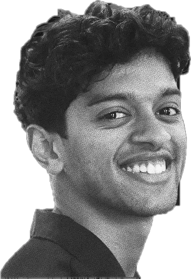
Play showreelResumeUX designer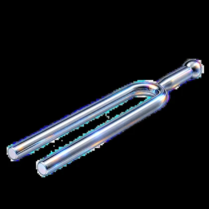 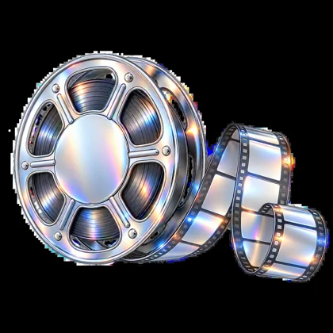
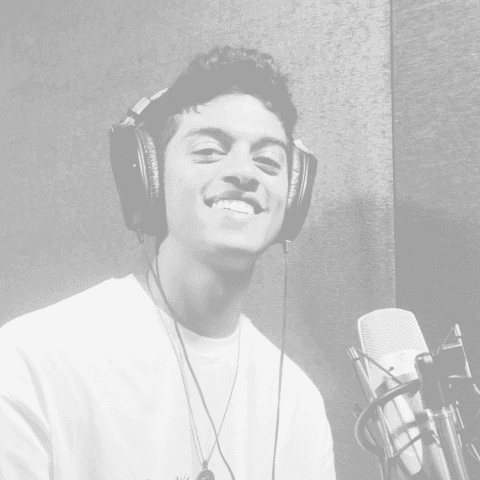
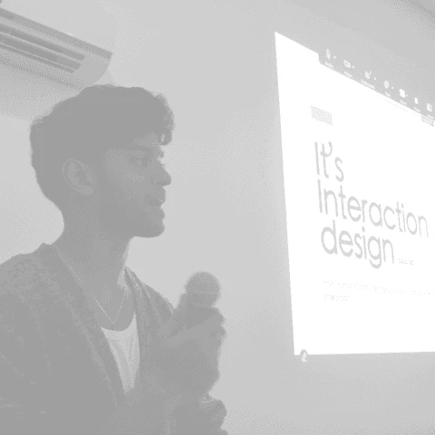
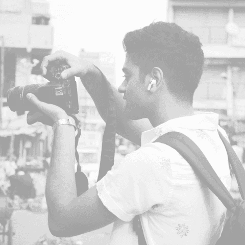
With 3 years in, I still let ideas run wild, obsess over the little things, and make sure the story gets told.
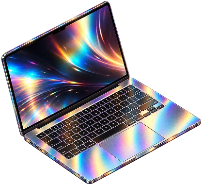
Plot twist: there is a life outside Figma.
Six little windows into the same person. Pick one.
Margin notes
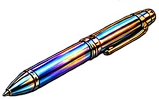
Dispatches from a brain with too many tabs open.Thoughts on design, technology and everything that refuses to leave my head.
margin-notes/ ├── moving-margins ├── grabb └── read-on-medium
ID, pleasePhoto IDHarsh VasaPhoto ID, no queue, mild eye contact.
I turn complicated things and systems into experiences that make sense.
id/ ├── resume.pdf └── linkedin
The toolkitA few ways I make messy things make sense.
Four ways I turn messy into clear.
toolkit/ ├── product-and-ux ├── research-and-strategy ├── web-and-brand └── motion-and-interaction
AccoladesNot to brag. Just showing my working.
Recognition, kept short.
accolades/ ├── 1st-airtribe-designathon ├── springer-aicte-publication ├── 2k-users-mind-alcove └── 30pc-faster-vendor-tasks
On repeat
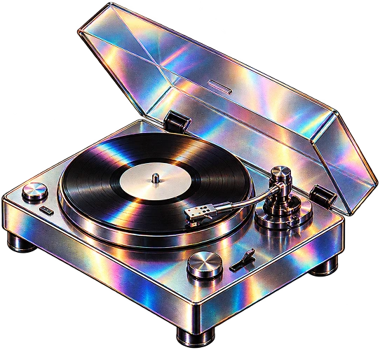
Currently living in my head, rent free.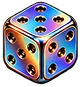
Hover anything. Everything has a story, most of them embarrassing.
Storyteller
CompetitorCollector
Tinkerer
12